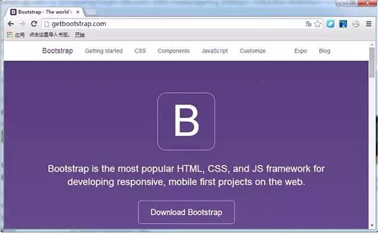
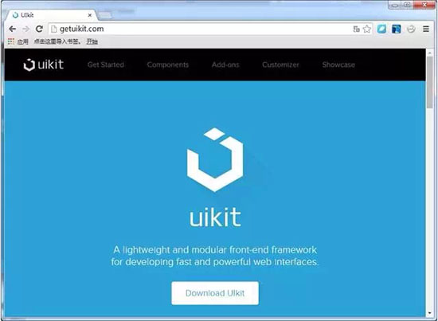

さまざまな開発フレームワークが次々と登場し、それぞれに長所があります。どれが開発者にとって最適なのでしょうか。本記事では、GitHubでの人気度に基づいて2014年に最も人気のあった6つのフロントエンド開発フレームワークをまとめ、比較説明を行います。必要な友人が自分に合ったフロントエンドフレームワークを選ぶ手助けになればと思います。
現在、さまざまな開発フレームワークが次々と登場し、それぞれに長所があります。昨年、開発者から比較的関心を集めたのはどれでしょうか。先日、云适配はGitHubでの人気度に基づいて2014年に最も人気のあった6つのフロントエンド開発フレームワークをまとめ、比較説明を行いました。必要な友人が自分に合ったフロントエンドフレームワークを選ぶ手助けになればと思います。
1. Bootstrap
Bootstrapは間違いなく現在のフレームワークのリーダーです。人気があるだけでなく、毎日ユーザー数も増え続けています。このツールがあなたを失望させないと信じてよいでしょう。また、単独で使用して自分のWebページを作ることもできます。

- 作成者: Mark Otto と Jacob Thornton
- リリース: 2011
- 現在のバージョン: 3.3.1
- 人気度: GitHubで75,000以上のスター
- 説明: "Bootstrap is the most popular HTML, CSS, and JavaScript framework for developing responsive, mobile first projects on the web."
- コアコンセプト/原理: RWDとモバイルファースト
- フレームワークサイズ: 145 KB
- プリプロセッサ: Less と Sass
- レスポンシブ: Yes
- モジュール化: Yes
- スターターテンプレート/アウトライン: Yes
- アイコンセット: Glyphicons
- その他のプラグイン: バンドルなし、サードパーティ製プラグインあり
- 独自コンポーネント: Jumbotron
- ドキュメント: 良好
- カスタマイズ: 基本的なGUIカスタマイズ可能。ただし、色選択ツールがないため手動での修正が必要。
- ブラウザサポート: Firefox、Chrome、Safari、IE8+（IE8では Respond.js が必要）
- ライセンス: MIT
2. Foundation by ZURB
Bootstrapと比較すると、Foundationは2位に留まっていますが、これは人気がないという意味ではありません。ZURBの背後での強力なサポートにより、Foundationはさらに強力になっています！FoundationはFacebook、Mozilla、Ebay、Yahoo、アメリカのナショナルジオグラフィックのWebサイトなど、さまざまな大手Webサイトで使用されています。

- 作成者: ZURB
- リリース: 2011
- 現在のバージョン: 5.4.7
- 人気度: GitHubで18,000以上のスター
- 説明: "The most advanced responsive front-end framework in the world"
- コアコンセプト/原理: RWD、Mobile First、Semantic
- フレームワークサイズ: 326 KB
- プリプロセッサ: Sass
- レスポンシブ: Yes
- モジュール化: Yes
- スターターテンプレート/レイアウト: Yes
- アイコンセット: Foundation Icon Fonts
- その他のコンポーネント: Yes
- 独自コンポーネント: Icon Bar、Clearing Lightbox、Flex Video、Keystrokes、Joyride、Pricing Tables
- ドキュメント: 良好。参考にできるリソースが多数ある。
- カスタマイズ: GUIカスタマイズはないが、自分で書くことはできる。
- ブラウザサポート: Chrome、Firefox、Safari、IE9+、iOS、Android、Windows Phone 7+
- ライセンス: MIT
- 特徴: Foundationは、ビジネス・運輸、教育研修、コンサルティングなどの業界にとって、プロフェッショナルなフレームワークです。また、迅速に学習するための多くのリソースも提供しています。
3.Semantic UI
Semantic UIは、Webページ制作をよりSemanticにするためにたゆまぬ努力を続けています。自然言語のルールにより、コードはより読みやすく理解しやすくなります。

- 作成者: Jack Lukic
- リリース: 2013
- 現在のバージョン: 1.2.0
- 人気度: GitHubで12,900以上のスター
- 説明: "A UI component framework based around useful principles from natural language."
- コアコンセプト/原理: Semantic、Tag Ambivalence、Responsive
- フレームワークサイズ: 552 KB
- プリプロセッサ: Less
- レスポンシブ: Yes
- モジュール化: Yes
- スターターテンプレート/レイアウト: No
- アイコンセット: Font Awesome
- その他のコンポーネント: No
- 独自コンポーネント: Divider、Flag、Rail、Reveal、Step、Advertisement、Card、Feed、Item、Statistic、Dimmer、Rating、Shape
- ドキュメント: 非常に充実している。Semanticは複数の構造レベルのドキュメントを提供し、初心者向けの専用サイトやその他のカスタマイズチュートリアルなども提供している。
- カスタマイズ: GUIカスタマイズはないが、自分で書くことはできる。
- 特徴: Semanticは、今日議論したフレームワークの中で最も革新的で、機能が最も包括的なフレームワークと言えます。全体的な構造、命名規則は明確な論理と意味論を持ち、他のフレームワークを凌駕しています。
4. Pure by Yahoo!
Pureは、純粋なCSSで書かれた、軽量でモジュール化されたフレームワークであり、さまざまな統合および独立したコンポーネントを含んでいます。

- 作成者: Yahoo
- リリース: 2013
- 現在のバージョン: 0.5.0
- 人気度: GitHubで9,900以上のスター
- 説明: "A set of small, responsive CSS modules that you can use in every web project."
- コアコンセプト/原理: SMACSS、Minimalism
- フレームワークサイズ: 18 KB
- プリプロセッサ: なし
- Responsive：Yes
- モジュール化: Yes
- スターターテンプレート/レイアウト: Yes
- アイコンセット: なし。Font Awesomeで代替可能。
- その他のコンポーネント: なし
- 独自コンポーネント: なし
- ドキュメント: 良好
- カスタマイズ: Basic GUI Skin Builder
- ブラウザサポート: 最新版のFirefox、Chrome、Safari、IE7+、iOS 6.x、7.x、Android 4.x。
- ライセンス: Yahoo! Inc. BSD
- 特徴: Pureはあなたのプロジェクトにクリーンな基本フレームワークを提供します。フル機能のフレームワークを必要とせず、特定のコンポーネントだけが必要な開発者にとって、Pureは良い選択肢です。
5. UIkit by YOOtheme
UIkitは、シンプルで使いやすく、カスタマイズしやすいコンポーネントです。競合他社ほど人気はありませんが、上記のフレームワークと同じ機能を提供し、品質も非常に優れています。

- 作成者: YOOtheme
- リリース: 2013
- 現在のバージョン: 2.13.1
- 人気度: GitHubで3,800以上のスター
- 説明: "A lightweight and modular front-end framework for developing fast and powerful web interfaces."
- コアコンセプト/原理: RWD、Mobile First
- フレームワークサイズ: 118 KB
- プリプロセッサ: Less、Sass
- レスポンシブ: Yes
- モジュール化: Yes
- スターターテンプレート/レイアウト: Yes
- アイコンセット: Font Awesome
- その他のコンポーネント: Yes
- 独自コンポーネント: Article、Flex、Cover、HTML Editor
- ドキュメント: 良好
- カスタマイズ: 高度なGUIカスタマイズ
- ブラウザサポート: Chrome、Firefox、Safari、IE9+
- ライセンス: MIT
- 特徴: UIkitは多くのWordPressテーマで使用されています。GUIエディタと手動編集を通じて、柔軟で強力なカスタマイズメカニズムを提供します。
6.Amaze UI
Amaze UIはモバイルファースト（Mobile First）を理念としており、海外のフレームワークと比較して、中国語のタイポグラフィにより重点を置いています。フロントエンドエンジニアから「最も中国語を理解しているフロントエンドフレームワーク」と称賛され、正式リリースからわずか4ヶ月で、すでにGithubで1500以上のスターを獲得しており、その勢いがうかがえます。

- 作成者: 云适配
- リリース：2014
- 現在のバージョン：2.0.0
- 人気度：GitHubで1500以上のスター
- 説明：Amaze UI はモバイルファーストのクロススクリーンフロントエンドフレームワークです。豊富なコンポーネントを備え、優れたインターフェースと優れた体験を備えたクロススクリーンページを迅速に構築でき、開発効率を大幅に向上させます。
- 中核となる概念/原理：Responsive、Web Components
- フレームワークサイズ：CSS 40KB、JS 48KB（gzip圧縮後）
- プリプロセッサ：Less
- レスポンシブ：Yes
- モジュール化：Yes
- スターターテンプレート/レイアウト：Yes
- アイコンセット：Font Awesome
- その他のコンポーネント：Yes
- 独自のコンポーネント：ローディングプログレスバー、サイドバー、画像カルーセル、固定要素、ページネーション、アコーディオンパネル、画像ギャラリーなど。
- ドキュメント：Amaze UIのドキュメントは非常に充実しており、さまざまなレベルの開発者に対応しています。複数の構造レベルのドキュメントを提供し、API設計は合理的で学びやすく使いやすいです。BUG報告はGitHubや公式QQグループ、多説コメントなどを通じて行われ、利用者は迅速に問題をフィードバックできます。
- カスタマイズ：現在GUIによるカスタマイズはありません。カスタマイズにはカスタマイズ設定ファイルのダウンロードが必要で、Amaze UI のソースコードをダウンロードしてgulpビルドツールを使用して独自にコンパイルします。
- ブラウザサポート：モダンブラウザ向けに開発されており、IE 8には限定的なサポートを提供します。
- 他との違い：Amaze UI は中国市場の特性に合わせた要素をさらに追加しています。中国語のタイポグラフィが最適化され、中国本土の主要ブラウザと互換性があります。Web コンポーネントは Web Components の実装形式に従って、モバイル開発でよく使われるコンポーネントを異なる部分に分割し、開発効率を大幅に向上させます。
- フレームワークは十分に人気がありますか？
- フレームワークは継続的に発展していますか？
- フレームワークは成熟していますか？
- 完全なドキュメントが提供されていますか？
- 特異性の程度はどのくらいですか？
特殊なフレームワークと比較して、汎用的なフレームワークは開発をより簡単にします。ほとんどの場合、最小限のスタイルを選択することでカスタマイズが容易になり、新しいCSSを追加する方が既存のスタイルを上書きするよりも簡単で効率的です。
最後に、このフレームワークが自分に適しているかどうかまだよくわからない場合は、異なるプロジェクトから1つか2つのコンポーネントを選んで自分のプロジェクトに組み込んでみてください。このように合成することも役立つはずです。